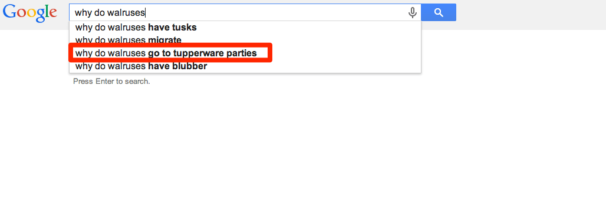
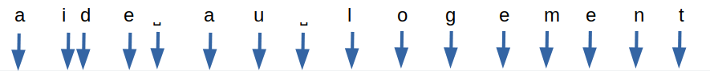
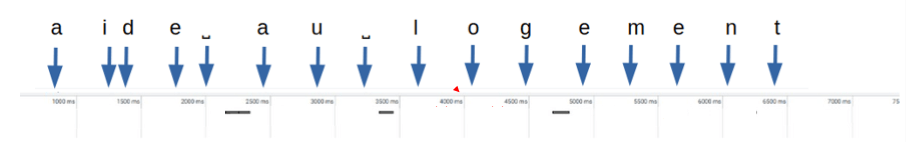

Lorsque nous naviguons sur le web, l’autocomplétion est partout ou presque. En particulier, cette fonctionnalité est implémentée sur les moteurs de recherche, qu’ils soient propres à un site web ou non. Ainsi, lorsque l’utilisateur tape les mots recherchés, des suggestions lui sont faites dynamiquement, qu’il s’agisse de compléter les mots ou expressions qu’il saisit ou d’afficher les résultats de la recherche au fur et à mesure que des caractères sont ajoutés.
Dans le cas de Google, ces suggestions sont souvent tournées en dérision en raison de leur incongruité. Sans compter ce marronnier du SEO annonçant la mort du moteur de recherche.

Prenons l’exemple du moteur de recherche de Google :

Ici, les flèches bleues représentent les saisies de caractères au clavier et les rectangles noirs des requêtes d’autocomplétion.
On arrive à un total de 16 requêtes de type XHR pour 5,1 ko transférés.
Le nombre de requêtes reste le même que la saisie soit rapide (saisie en 2 secondes pour l’ensemble de la recherche) ou plus longue (7 secondes au total pour la saisie).
On retrouve aussi l’autocomplétion dans certains formulaires de saisie, afin de s’assurer que le texte entré corresponde bien à ce qui est attendu (ville, pays, etc).
Si ce mécanisme peut être une aide pour l’utilisateur, l’impact environnemental des requêtes générées ne doit pas être négligé. Voyons désormais comment les limiter.
Premières recommandations
Si l’on priorise la sobriété, la meilleure chose à faire est de ne pas intégrer de mécanisme d’autocomplétion. Toutefois, l’aide à la saisie est un avantage indéniable pour les utilisateurs dans la plupart des cas.
Dans le cas des formulaires, le recueil des 115 bonnes pratiques d’écoconception web du collectif GreenIT.fr préconise l’aide à la saisie. Ainsi, on sollicite moins le serveur tout en s’assurant que le texte saisi reste conforme à ce qui est attendu.
Du côté du GR491, on trouve deux préconisations :
- Limiter les recherches inutiles par les moteurs de recherches locaux : pour cela, on se base sur le nombre de lettres saisies afin d’espacer les requêtes
- Limiter le nombre de requêtes entre le client et le serveur : cette bonne pratique plus générale s’applique tout à fait ici
Plutôt que de mettre systématiquement en place l’autocomplétion et la recherche, il est parfois possible de mettre des filtres (et des mécanismes de tri) à disposition de l’utilisateur.
Partant de ces premiers éléments, voyons comment aller plus loin encore.
Préconisations
S’assurer que les requêtes soient aussi légères que possible
Lorsque le client émet une requête vers le serveur, on s’assure que celle-ci ne contient que les éléments nécessaires pour fournir une réponse pertinente.
Lorsque le serveur envoie une réponse, on s’assure ici aussi que :
- Seuls les champs pertinents sont renvoyés. Par exemple, il n’est pas toujours nécessaire d’afficher une image pour chaque résultat
- On ne renvoie que les éléments nécessaires (pertinence des réponses et pagination des résultats)
Ne pas proposer l’autocomplétion avant quelques caractères
Avant de lancer la première requête, il est préférable d’attendre que 5 caractères soient saisis ou qu’au moins 2 secondes se soient écoulées depuis la dernière saisie par l’utilisateur.
Ainsi, on évite de renvoyer des résultats pour une demande trop vague (lorsque le nombre de caractères saisis est insuffisant), tout en prenant en compte le cas où le terme recherché est volontairement court (“été”, etc).
Espacer les requêtes dans le temps
Après la requête initiale, attendre que 3 nouveaux caractères aient été saisis ou qu’au moins 2 secondes se soient écoulées depuis la dernière requête.
Limiter le nombre de requêtes pour saisies rapides
En complément de la règle précédente, dans le cas d’une saisie rapide, attendre au moins une seconde entre chaque requête. En effet, certains utilisateurs particulièrement rapides peuvent saisir un caractère toutes les 200 ms.
Mesurer la pertinence en local
Lorsqu’un utilisateur ajoute des caractères à sa recherche, les résultats se précisent et leur nombre diminue. Il est possible d’effectuer directement ce filtre localement, sans requête additionnelle vers le serveur. Par exemple, si des résulats ont été obtenus pour “aide au log”, il est possible de filtrer côté client si l’utilisateur poursuit en tapant “aide au logement”.
Cette bonne pratique est d’autant plus pertinente dans le cas d’un champ de saisie dans un formulaire. Par exemple, dans le cas de la saisie d’une ville ou d’un pays, les éléments d’une première requête peuvent être affinés localement à mesure que l’utilisateur poursuit sa saisie.
Attention, si un espace est saisi et de nouveaux termes ajoutés, il faut prendre en compte la logique choisie pour les résultats de recherche. En particulier, est-ce qu’un résultat doit contenir tous les termes saisis ou seulement une partie d’entre eux?
Attention également à bien prendre en compte le cas où l’utilisateur supprime certains des caractères saisis. Quitte à stocker temporairement les requêtes déjà effectuées afin de les utiliser à nouveau si besoin.
Retour sur l’exemple du moteur de recherche Google
En reprenant le cas de la saisie dans le moteur de recherche Google évoqué en début d’article (16 requêtes, 5.1 ko transférés), nous arrivons à 3 requêtes en tout pour 1 ko transféré.

- Une première requête effectuée seulement lorsqu’au moins 5 caractères ont été saisis.
- Une deuxième requête lorsque 3 caractères supplémentaires ont été saisis.
- Une troisième requête lorsque 3 caractères supplémentaires ont été saisis.
- L’évaluation en local des résultats à renvoyer pour la fin de la saisie, dans la mesure où il ne s’agit que de filtrer les résultats obtenus suite à la troisième requête.
Conclusion
Si l’autocomplétion apparaît comme une nécessité et que la saisie assistée n’est pas possible, les bonnes pratiques suivantes doivent être mises en œuvre :
- S’assurer que les requêtes soient aussi légères que possible
- Ne pas proposer l’autocomplétion avant quelques caractères
- Espacer les requête dans le temps
- Limiter le nombre de requêtes pour les saisies rapides
- Mesurer la pertinence en local
Enfin, même si cette aide à la saisie peut être bénéfique pour de nombreux utilisateurs, ne négligez pas pour autant son accessibilité.